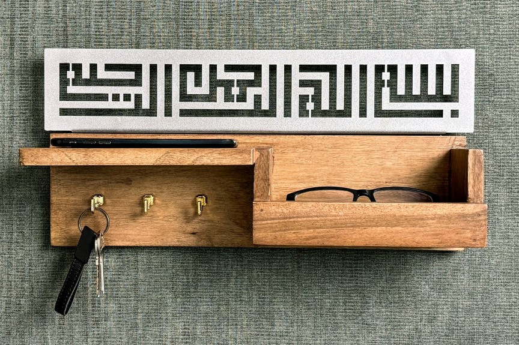
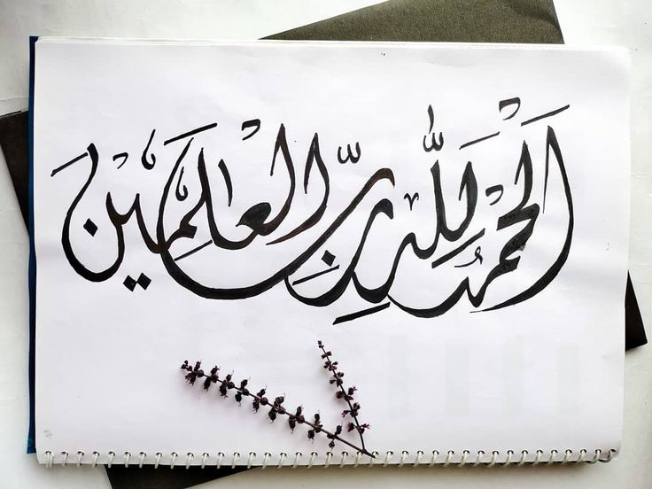

| Type |
Illustration |
Kufic
- Oldest Script: Kufic is one of the earliest forms of Arabic script, dating back to the 7th century.
- Geometric and Angular: It is known for its straight lines and right angles, creating a bold, structured look.
- Used in Decoration: Often seen in architectural inscriptions, coins, and early Quran manuscripts due to its clarity and durability.
- Minimal Curves: Unlike later scripts, Kufic has minimal curves and favors symmetry, making it distinct and easily recognizable.
|

|
Rayhani
- Refined and Graceful: Rayhani is known for its slender and delicate letters, making it one of the more refined Arabic scripts.
- Associated with Religious Texts: Often used for Quranic manuscripts due to its beauty and readability.
- Soft and Rounded Style: The script has smooth curves and rounded shapes, giving it a softer appearance compared to Kufic.
- Requires Precision: Writing in Rayhani requires careful attention to proportion, balance, and uniformity of letters.
|
 |
Thuluth
- Elegant and Flowing: Thuluth is characterized by its large, graceful curves and elongated strokes, making it visually impressive.
- Complex and Decorative: Due to its intricacy, it’s often used in ceremonial inscriptions, mosques, and religious manuscripts.
- Highly Skilled: Writing in Thuluth requires extensive training, as it involves precise balance and flowing movement.
- Popular in Ottoman Art: This script was widely adopted in the Ottoman Empire and is frequently seen in their calligraphic work.
|
|
Naskh
- Highly Legible: Naskh is one of the most readable Arabic scripts, making it ideal for everyday writing and printed texts.
- Widely Used for Printing: It became the standard for printing Arabic books, including Quranic texts, due to its clarity and simplicity.
- Balanced and Proportional: The script maintains a clear structure, with letters in balanced proportions and moderate curves.
- Versatile and Functional: Due to its practicality and readability, Naskh is commonly used in digital fonts and everyday documents.
|
|
Diwani
- Highly Ornamental: Diwani script is elaborate and ornate, with intricate flourishes and decorative loops.
- Secretive Origins: Developed in the Ottoman Empire for official documents, its style made it difficult to forge or read by untrained eyes.
- Compact and Curved: Letters are closely spaced, and the script is distinguished by its dense, flowing curves.
- Popular for Ceremonial Use: Its decorative quality makes it ideal for official seals, royal decrees, and modern-day invitations.
|
 |
Copyright© 2024 Nile University.
Made BY ECE Students under the supervision of Eng: Heba Ali and Eng: Shahd Noman